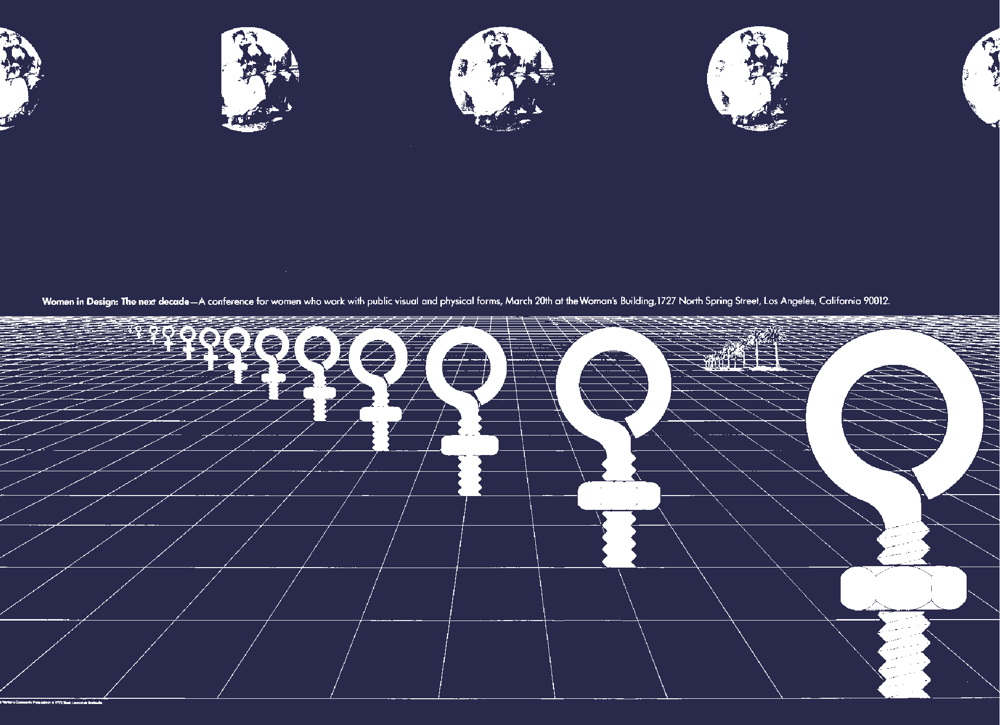

EXHIBITION
Sheila Levrant de Bretteville:
Community, Activism, and Design
February 16, 2024 – June 23, 2024

Sheila Levrant de Bretteville: Community, Activism, and Design is the first monographic exhibition on this renowned graphic designer, public artist,
and educator, whose community-based and politically responsive work champions principles of advocacy and inclusion. De Bretteville (b. 1940, B.F.A. 1963, M.F.A. 1964)
is well known for her important and early contributions to the field of feminist design and education; in 1973, with the artist Judy Chicago and the art historian
and critic Arlene Raven, de Bretteville established the Woman’s Building and the Feminist Studio Workshop—the first independent art school for women and women’s
culture—in downtown Los Angeles. This exhibition presents a rich array of materials drawn from the artist’s extensive archive to highlight pivotal moments in her
multifaceted and trailblazing career. On view are dynamic and rarely seen promotional materials that de Bretteville made for Yale University Press and the Italian
manufacturer Olivetti shortly after she graduated from the Yale School of Art; posters and broadsheets produced while she was living in Los Angeles that blend word and
image to advance woman-focused initiatives, many of which have become icons of feminist design; and photographs and models of her public art installations, which
reflect her ongoing commitment to the feminist movement and issues such as immigration and racial equity. Representing a shift in scale and focus from the printed
page to the urban environment, these public projects, which have not been closely examined as a group until now, include “Biddy Mason: Time and Place” (Los Angeles,
1989–90), an expansive sculptural mural honoring a formerly enslaved midwife made in collaboration with the artist Betye Saar, and “Hillhouse” (New Haven,
Connecticut, 2003), the revitalization of the entrance to a local high school. De Bretteville’s accomplishments continue to have lasting effects: In 1990 she was
named director of graduate studies in graphic design at Yale and became the first woman at the Yale School of Art to be awarded tenure. Her vision has shaped a new
generation of graphic design.